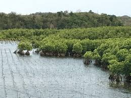
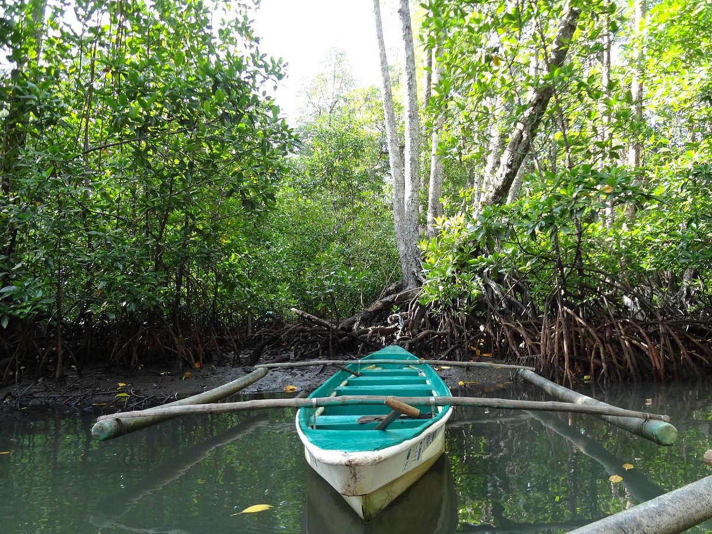

The Bued Mangrove Forest in Alaminos, Pangasinan, Philippines, is a coastal ecosystem reserve notable for its thriving mangrove trees and biodiversity. It serves as both an ecotourism site and a vital natural barrier protecting coastal communities from erosion and storm surges.

The Bued Mangrove Forest, located near Alaminos City, Pangasinan, plays a vital role in maintaining coastal ecosystems along the Lingayen Gulf. Its dense network of mangrove trees provides shelter and breeding grounds for marine species such as fish, crabs, mollusks, and various invertebrates. These habitats directly support local fisheries, helping sustain the livelihoods of coastal communities.
Beyond biodiversity, the mangrove forest acts as a natural defense system for the shoreline. Its intricate root systems stabilize coastal soil, reduce erosion, and trap sediments carried by tides and rivers. Mangroves also filter pollutants and improve water quality, making them essential to the long-term health of surrounding marine environments.

Visitors to the Bued Mangrove Forest can explore its unique ecosystem through guided boat tours and paddle experiences that pass through calm waterways beneath the mangrove canopy. These tours offer a close-up view of the forest’s root systems and wildlife, creating an immersive and educational experience for nature enthusiasts.
Elevated wooden boardwalks also allow guests to walk through sections of the forest while observing its flora and fauna. Interpretive signage and guided explanations highlight the importance of mangroves, helping visitors understand conservation efforts and sustainable coastal practices. These activities not only promote environmental awareness but also provide income opportunities for local residents.

The preservation of Bued Mangrove Forest is supported by collaboration between local government units and environmental organizations. Reforestation programs regularly plant new mangrove seedlings to restore degraded areas, ensuring the continued growth and resilience of the ecosystem. These initiatives are crucial in protecting coastal zones from the impacts of climate change, including rising sea levels and stronger storms.
Community involvement is a key part of conservation efforts. Local residents participate in maintenance, monitoring, and educational programs that promote responsible tourism and environmental stewardship. As a result, the forest has become not only a natural attraction but also a model for sustainable coastal resource management in Pangasinan.

Bued Mangrove Forest is conveniently accessible from Alaminos City, Pangasinan, located approximately 15 kilometers from the city center. Its proximity to Hundred Islands National Park makes it an ideal side trip for visitors already exploring the region’s coastal attractions.
Travelers can reach the site via local transport or private vehicles, with routes passing through scenic coastal and rural landscapes. Because of its accessibility and educational value, the mangrove forest is increasingly included in eco-tourism itineraries, offering a balance of relaxation, learning, and environmental appreciation.